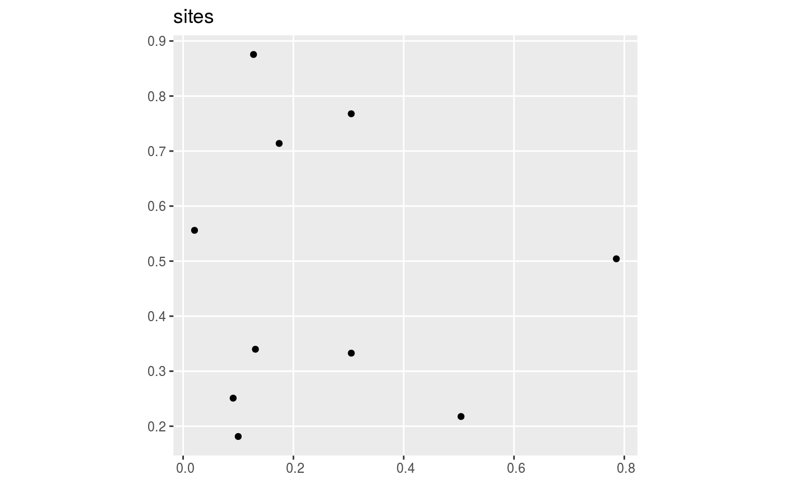
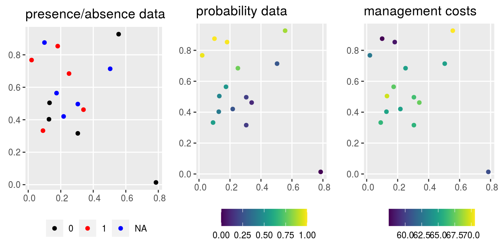
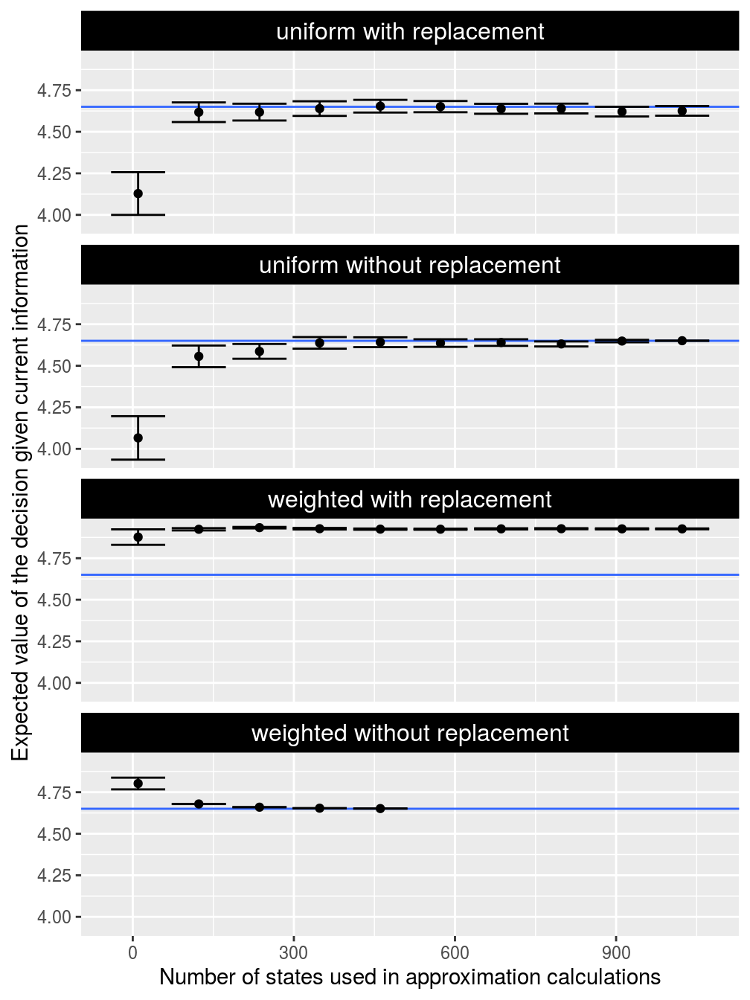

Here we will examine the approximation method for value of information analyses. To achieve this, we will compare estimates from the approximation method against the correct values from the exact methods. A crucial part of the approximation method involves generating a subset of states to approximate the full set of states, and so we will investigate several different methods for generating states. We will also examine how the number of approximation states affects the quality of the estimate.
Let’s start by setting up our R session. Here we will load some R packages and pre-set the random number generators for reproducibility.
Let’s simulate some data. To keep things simple, we will simulate data for 10 sites and 1 conservation feature (e.g. species). Of the 10 sites in total, we will simulate survey data for 5 sites—meaning that 10 sites will not have survey data.
# simulate site data
site_data <- simulate_site_data(
n_sites = 10, n_features = 1, proportion_of_sites_missing_data = 5 / 10)## ...# print site data
print(site_data)## Simple feature collection with 10 features and 7 fields
## geometry type: POINT
## dimension: XY
## bbox: xmin: 0.02070792 ymin: 0.1813143 xmax: 0.7855831 ymax: 0.8754956
## epsg (SRID): NA
## proj4string: NA
## # A tibble: 10 x 8
## survey_cost management_cost e1 e2 e3 f1
## <dbl> <dbl> <dbl> <dbl> <dbl> <dbl>
## 1 7.94602 72.1741 -0.416735 -0.832440 0.0844003 1
## 2 4.53083 71.4528 -1.15906 0.628728 1.46784 NA
## 3 7.16376 72.1627 -1.10065 -0.908241 0.885747 1
## 4 7.20006 69.8814 -0.807846 -1.01260 0.556981 NA
## 5 5.36988 69.3756 0.588708 -0.761210 -0.660947 0
## 6 5.03169 62.6822 -0.349896 2.28301 1.01294 NA
## 7 6.27642 66.6239 1.11393 0.0835220 -1.23753 0
## 8 4.65999 58.0444 1.54020 0.362299 -1.10079 NA
## 9 4.68288 68.2921 -0.529539 -0.165824 0.212885 1
## 10 6.28144 61.8291 1.12090 0.322752 -1.22152 NA
## # … with 2 more variables: p1 <dbl>, geometry <POINT>
The site_data object is a spatially explicit dataset (i.e. sf) that contains information on the site locations and additional information for each site too. Here, each row corresponds to a different site and each column contains different information about the sites. The f1 column contains the results from previous surveys, where ones indicate that the feature was previously detected at a site, zeros indicate that the feature has not previously been detected at a site, and missing (NA) values mean that a site has not yet been surveyed. The p1 column contains modelled probability of occupancy predictions from environmental niche models. The management_cost column contains the cost for managing each site for conservation. Although the site_data object contains additional columns, they are not relevant here and so we will not bother with them. To help understand the simulated data, let’s create some visualizations.
# map of site occupancy data from previous surveys
p1 <-
site_data %>%
mutate(f1 = as.character(f1)) %>%
ggplot() +
geom_sf(aes(color = f1)) +
scale_color_manual(name = "", values = c("1" = "red", "0" = "black"),
na.value = "blue") +
labs(title = "presence/absence data") +
theme(legend.position = "bottom")
# make map of modelled probability of occupancy data
p2 <-
site_data %>%
ggplot() +
geom_sf(aes(color = p1)) +
scale_color_viridis(name = "", limits = c(0, 1)) +
labs(title = "probability data") +
theme(legend.position = "bottom")
# make map of site occupancy data from previous surveys
p3 <-
site_data %>%
ggplot() +
geom_sf(aes(color = management_cost)) +
scale_color_viridis(name = "") +
labs(title = "management costs") +
theme(legend.position = "bottom")
# display plots
grid.arrange(p1, p2, p3, nrow = 1)
Next we will simulate a total budget for protecting sites. Specifically, we will set this budget (i.e. total_budget) as 60% of the overall site management costs.
# calculate total budget for protecting sites
total_budget <- sum(site_data$management_cost) * 0.6
# print budget
print(total_budget)## [1] 403.5109After simulating data for the sites, we will simulate data for the conservation feature.
# simulate feature data
feature_data <- simulate_feature_data(
n_features = 1, proportion_of_survey_features = 1)
# print feature data
print(feature_data)## # A tibble: 1 x 9
## name survey survey_sensitiv… survey_specific… model_sensitivi…
## <chr> <lgl> <dbl> <dbl> <dbl>
## 1 f1 TRUE 0.982836 0.861585 0.713643
## # … with 4 more variables: model_specificity <dbl>, preweight <dbl>,
## # postweight <dbl>, target <dbl>The feature_data object is a table (i.e. tibble) that contains information on the conservation feature. Here, each row corresponds to a different feature – and so it only has one row because we only have one feature – and each column contains different information about the feature(s). The name column contains the name of the feature. The preweight, postweight, and target columns contain values that specify the conservation benefit gained when sites are managed for conservation. The survey_sensitivity and survey_specificity columns denote the sensitivity (probability of correctly detecting a presence) and specificity (probability of correctly detecting an absence) of the survey methodology. Finally, the model_sensitivity and model_specificity columns denote the sensitivity and specificity of the model used to predict the occupancy probabilities in the site_data object (i.e. values in the p1 column).
After simulating the data, we can conduct our benchmark analysis. Our simulated data contains one feature and ten planning units in total. This means that there is a total of 1024 states. Since we are interested in understanding how the number states in the approximation method affects its accuracy, we will create a set of containing different numbers of states (i.e. n_approx_states).
# create set of number of approximation states
n_approx_states <- ceiling(seq(10, n_states(1, 10), length.out = 10))
# print states
print(n_approx_states)## [1] 10 123 236 348 461 574 686 799 912 1024This benchmark analysis will examine various approaches for approximating the expected value of the decision given current information. To evaluate the accuracy of the approximation calculations, we will calculate exactly what this number should be given the simulated data.
# calculate the correct value of the decision given current information using
# exact methods
ev_current <- evdci(
site_data = site_data,
feature_data = feature_data,
site_occupancy_columns = "f1",
site_probability_columns = "p1",
site_management_cost_column = "management_cost",
feature_survey_sensitivity_column = "survey_sensitivity",
feature_survey_specificity_column = "survey_specificity",
feature_model_sensitivity_column = "model_sensitivity",
feature_model_specificity_column = "model_specificity",
feature_preweight_column = "preweight",
feature_postweight_column = "postweight",
feature_target_column = "target",
total_budget = total_budget)
# print value
print(ev_current)## [1] 31.28657Next, we will benchmark the approximation methods for calculating the expected value of the decision given current information using the simulated data. Here, we will examine four methods for generating states: uniform with replacement, uniform without replacement, weighted with replacement, and weighted without replacement. The uniform methods randomly sample states and do not consider the prior probability of each state occurring. The weighted methods, on the other hand, are select states that have a greater chance of occurring. To account for stochasticity in the approximation methods – i.e. each run will give a different answer depending on the state of the random number generator – we will report means and standard errors for 25 replicates per number of approximation states. Furthermore since the weighted without replacement method is computationally inefficient for generating subsets that contain a high proportion of the total states, we will not explore the full range of subsets for this method.
# define function for calculating standard error
se <- function(x) sqrt(var(x) / length(x))
# estimate the correct value of the decision given current information using
# approximation methods
ev_prime_current <-
expand.grid(method =
c("uniform_with_replacement", "uniform_without_replacement",
"weighted_with_replacement", "weighted_without_replacement"),
n = n_approx_states) %>%
filter(!((method == "weighted_without_replacement") &
(n >= (max(n_approx_states) * 0.5)))) %>%
plyr::ddply(c("method", "n"), function(x) {
result <-
approx_evdci(
site_data = site_data,
feature_data = feature_data,
site_occupancy_columns = "f1",
site_probability_columns = "p1",
site_management_cost_column = "management_cost",
feature_survey_sensitivity_column = "survey_sensitivity",
feature_survey_specificity_column = "survey_specificity",
feature_model_sensitivity_column = "model_sensitivity",
feature_model_specificity_column = "model_specificity",
feature_preweight_column = "preweight",
feature_postweight_column = "postweight",
feature_target_column = "target",
total_budget = total_budget,
n_approx_replicates = 25,
n_approx_states_per_replicate = x$n,
method_approx_states = as.character(x$method),
seed = 100)
data.frame(n = x, mean = mean(result), se = se(result))
}) %>%
as_tibble() %>%
mutate(lower = mean - se, upper = mean + se) %>%
mutate(method = gsub("_", " ", method, fixed = TRUE))Now, let’s visualize the results.
# create plot
ggplot() +
geom_hline(yintercept = ev_current, colour = "#3366FF") +
geom_point(aes(x = n, y = mean), ev_prime_current) +
geom_errorbar(aes(x = n, ymin = lower, ymax = upper), ev_prime_current) +
facet_wrap(~ method, ncol = 1) +
xlab("Number of states used in approximation calculations") +
ylab("Expected value of the decision given current information") +
theme(strip.background = element_rect(color = "black", fill = "black"),
strip.text = element_text(color = "white", size = 12))
Broadly speaking, we can see that the estimates (points) get closer to the correct value (blue line) when more states are used in the approximation calculations (greater values on the x-axis). Furthermore, we can see that the estimates become more precise (smaller error bars) when more states are used in the approximation calculations (greater values on the x-axis). This pattern is true for most of the sampling methods – except for the weighted with replacement method which performs really poorly – and shows that most the approximation method is more accurate when we use a greater number of states for the calculations. In particular, we can see that the weighted without replacement method is the most useful because it converges to the correct value (blue line) with the fewest approximation states.